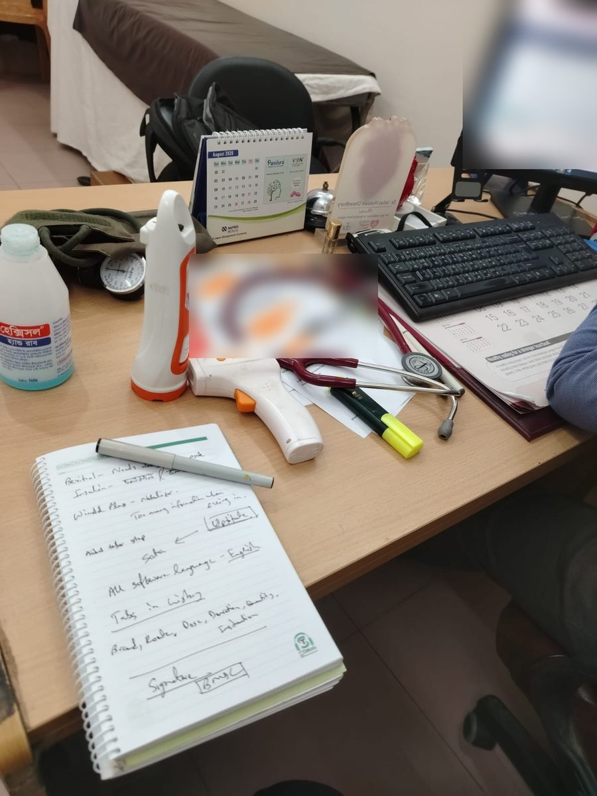
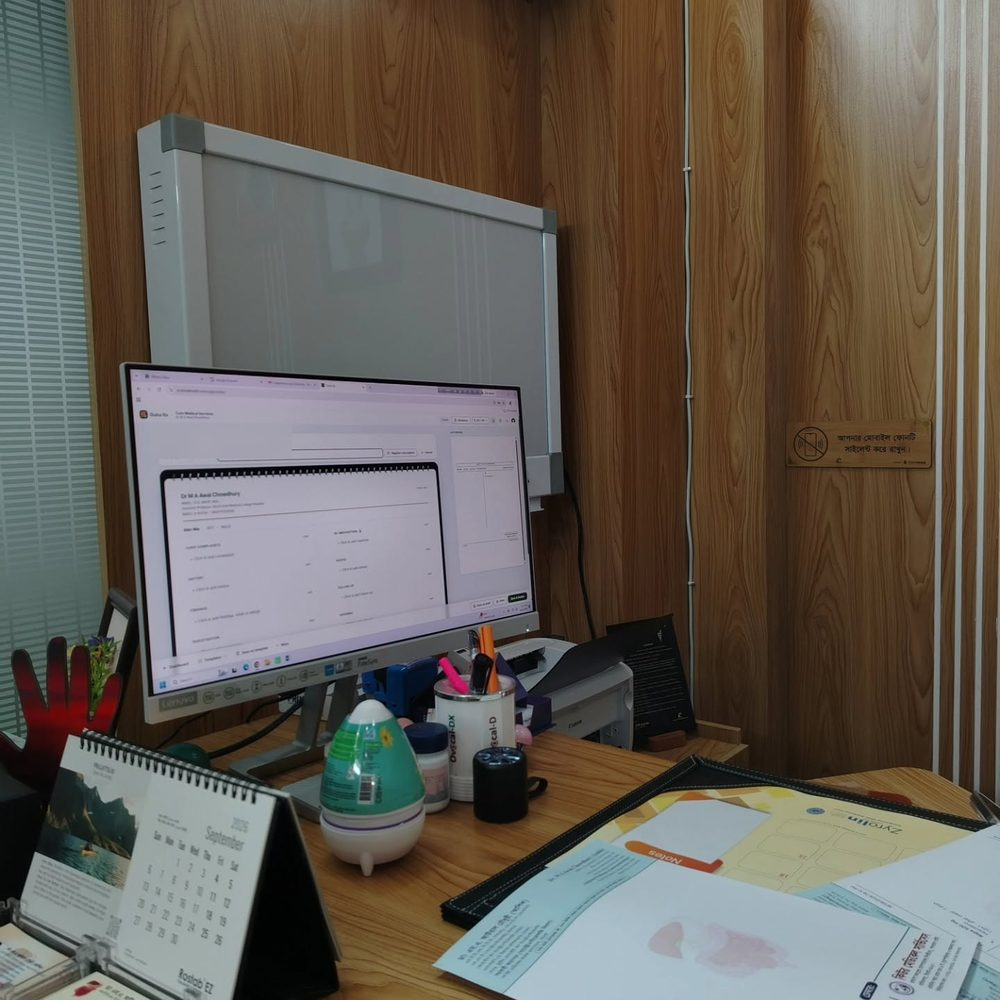
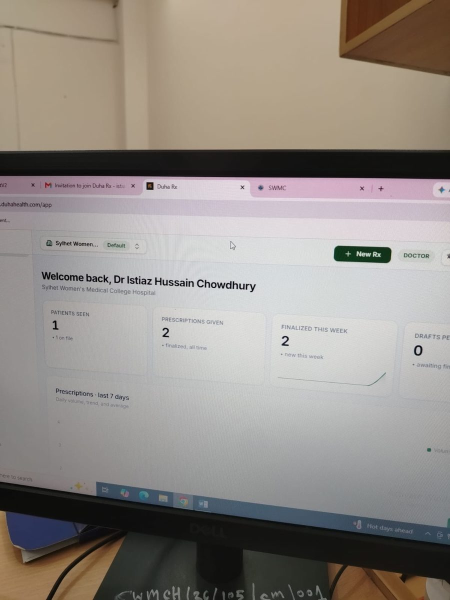
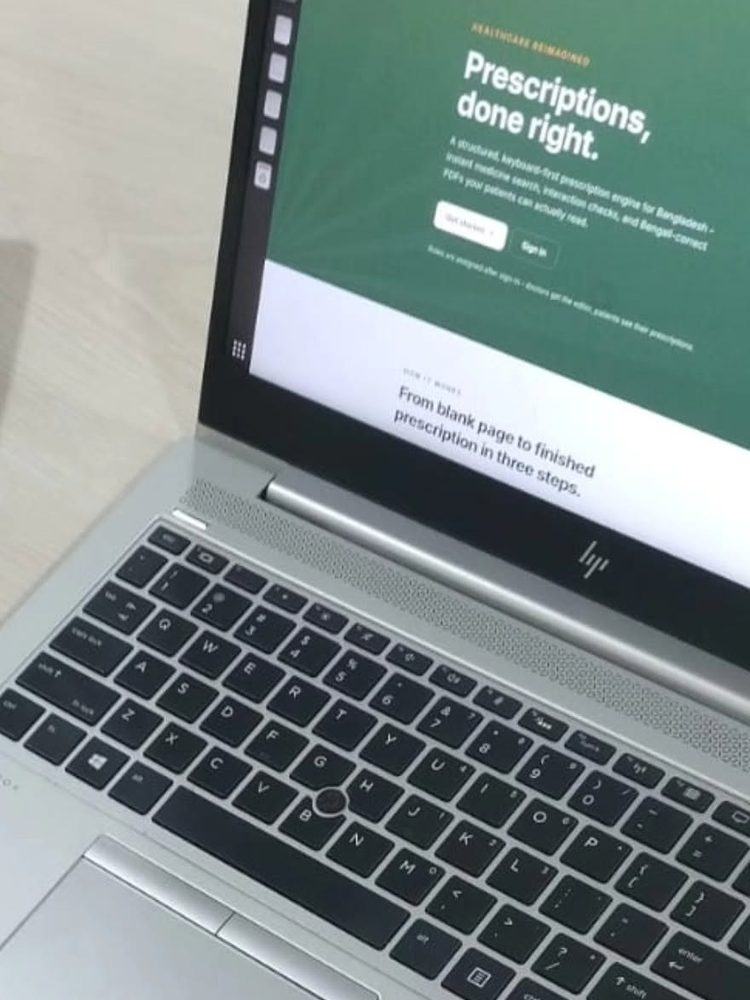

Clinical decision support & medication safety
Catching prescribing errors and drug–drug interactions at the point of care in paper-first, low-resource health systems.
Health Informatics · Sylhet, Bangladesh
I am Syed Mostofa Moosa, a Computer Science undergraduate and health-tech founder. I research clinical decision support and medication safety for low-resource settings, and I build software that brings Bangladeshi clinics into the digital age.
01 — Research interests
Catching prescribing errors and drug–drug interactions at the point of care in paper-first, low-resource health systems.
Using clinical natural language processing, vision-language models and LLMs to read, structure and check prescriptions.
Designing EHR, practice-management and prescription data models that fit the realities of clinics in low- and middle-income countries.
02 — Current thesis
Undergraduate thesis · Metropolitan University, Sylhet · Manuscript in preparation (Moosa SM, Emon MH, Muzammil M)
Most outpatient prescriptions in Bangladesh are handwritten and dispensed with no automated safety check. Clinical decision support depends on structured digital data, and traditional OCR fails on cursive handwriting, abbreviations and mixed Bangla–English notation. As a result, safety checks never receive usable input.
Field-level extraction precision, recall and F1 against clinician annotations, plus hazard-detection sensitivity and false-alert rate against clinician review.
Duha Rx runs real-time CDS on digital prescriptions. The VLM pipeline extends those checks to the paper prescriptions still in circulation at pharmacies and on intake. Next steps: integrate validated CDS rules into Duha Rx, add Bangla-language support, and release a public screening tool with clear accuracy disclaimers.
03 — Publications & manuscripts
Sadi MRK, Naeem GM, Tasin TR, Moosa SM, Emon MH, Rashid M, Ahmed F · PeerJ Computer Science
Moosa SM, Emon MH, Muzammil M
04 — Building
Co-Founder & CEO. Chamber management and prescription software for Bangladeshi doctors, with real-time decision support on digital prescriptions. It's the first step toward an EHR system for Bangladesh. I lead product, research, go-to-market and operations.
Founder & CEO. A digital agency for small and mid-sized US healthcare practices covering medical billing/RCM, tech development, marketing and cloud. Grew client revenue and patient bookings by 30%.
A Bangladeshi take on ZocDoc: patients book appointments and get telemedicine consultations with doctors. Built for Web Programming at Metropolitan University.
From the field
Duha Rx is built alongside the physicians who use it. I sit in on consultations, watch how prescriptions are actually written, and take feedback back to the product the same week.




05 — Experience
06 — Education & honours
Metropolitan University · Sylhet, Bangladesh
GPA 3.50 / 4.00
Poughkeepsie, New York
Economics, Biology, Computer Science, Mathematics
Sylhet, Bangladesh
Pearson Edexcel IAL: 3A* & 1A · IGCSE: 7A* & 1B
07 — Toolkit
08 — Contact
Open to research collaborations, Duha Rx demo, and conversations about digital health in Bangladesh and other LMICs.